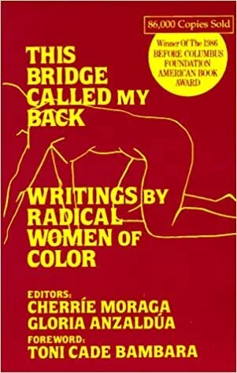
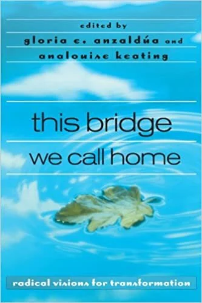
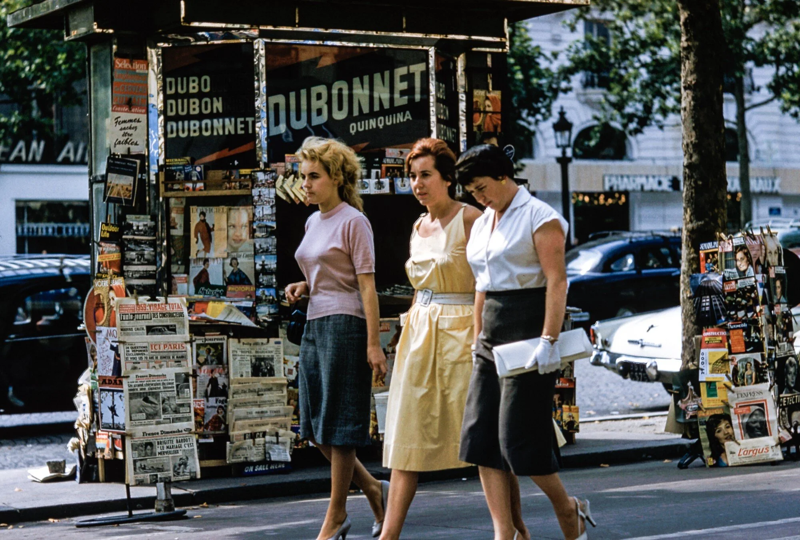
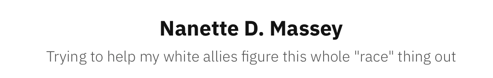
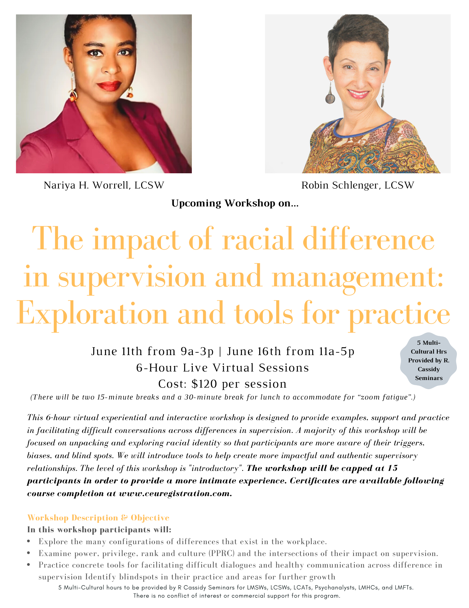
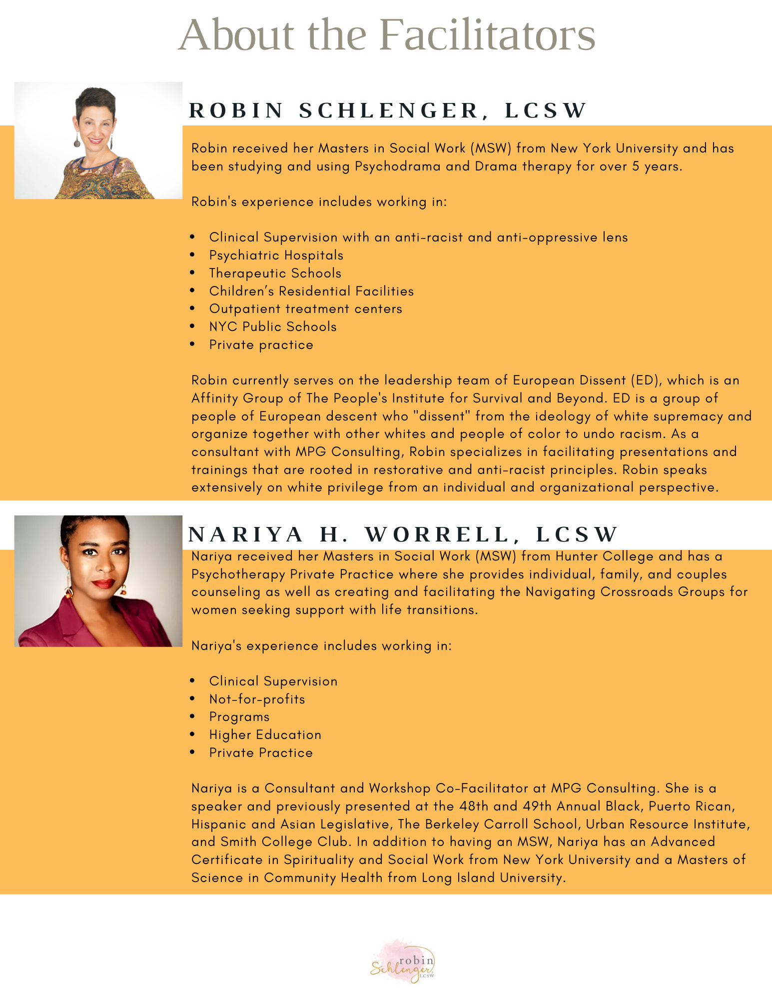

2020-05-29
The Devastating Impact Of Racism On Women Of Color
Mother’s Day has not been a time that I have spent thinking about forced sterilization, rape, medical experimentation and other forms of torture. Yet this year, I can’t not think about it. If I had one wish for Mother’s Day each year, it would be that all of us white people would finally wake up to the reality of the devastating health disparities that People of Color, especially Black women live with every single day in this country. I beg of you all, PLEASE do not let us forget what we have seen, heard and felt. We cannot afford to slip back under the spell of the white lullaby. Historically, black women and other women of color have breast fed, raised, and even loved our white children and yet, WE continue to kill theirs. Harsh but true, and this is the biggest disparity of all. We must do better. Our humanity is at stake.
PLEASE join me on the journey.
In solidarity,
Robin

I am currently working on a project that examines the ways white women have been complicit in perpetuating white supremacy and both of these books were suggested to me. I have not read either of them yet, but I trust my referral (thanks, AP) and I just purchased them both. The first book, “This Bridge Called My Back: Radical Writings by Women of Color,” edited by Cherrie Moraga and Gloria Anzaldúa has been called “a testimony to women of color feminism as it emerged in the last quarter of the twentieth century. Through personal essays, criticism, interviews, testimonials, poetry, and visual art, the collection explores, as co-editor Cherríe Moraga writes, ‘the complex confluence of identities—race, class, gender, and sexuality—systemic to women of color oppression and liberation'.” This book felt especially apropos for Mother’s Day.
https://www.amazon.com/This-Bridge-Called-My-Back/dp/091317503X

Another book more recently edited and published by Moraga and Anzaldúa is titled, This Bridge We Call Home: Radical Visions for Transformation. It is “a new collection of over eighty original writings that offers a bold new vision of women-of-color consciousness for the twenty-first century. Written by women and men--both 'of color' and 'white'." I am looking forward to reading and discussing them.
https://www.amazon.com/this-bridge-call-home-transformation/dp/0415936829

This short essay by “Zuva” also felt appropriate to share around Mother’s Day. White women often want to talk about sisterhood and blame Women of Color for not accepting us. There are so many reasons why they should not. One of those reasons is our discomfort and resistance to looking at our white privilege. It is painful and often shameful to bear the thought of myself as someone who is not trustworthy. No one I know wants to be associated with that identity; yet, I understand that this is a consequence of white supremacy and I will not pretend it isn’t earned. So, what am I going to do with it? I am going to listen, learn how to do better and not look to People of Color to give me a pat on the back or congratulate me when I do something that I SHOULD be doing. Comfort is a privilege, working through the discomfort is the hard part. I think it’s the least I can do.
https://medium.com/an-injustice/white-women-need-to-confront-their-complicity-regarding-systemic-oppression-46ba6463d48a
This article by Roberta K. Timothy looks at “the historical exploitation of Black and Indigenous women and how it continues to play out and impact the current disparity in maternal health.” I am ashamed to admit that it has taken this horrible pandemic for me to finally fully grasp what this means and to feel the anger, horror and heartache in my heart and soul. On a day when we are supposed to be honoring mothers, I can’t help but think about the many mothers of color who are putting their lives and the lives of their families on the line at work because they are “essential workers.” These essential workers have to go to work and risk losing their jobs or being able to feed or house their families. How essential were they in our eyes before COVID-19 and how quickly will we forget how essential they are as time passes and we get back to our “new normal”?
https://theconversation.com/9-ways-racism-impacts-maternal-health-111319

“White Fragility-Outside the Echo Chamber” is an ongoing weekly Sunday seminar offered by Nanette Massey, an African American writer from Buffalo, NY. This is a snippet from her website: “We are way beyond holding hands when it comes to talking about race. This is your chance [white people] to contextualize your questions around race and equity from an unfiltered, real world, lived experience rather than a theoretical framework that only 'echoes' back what you think you already know. Massey will present her take on ideas in frank, practical terms. The goal is to leave audiences with self-clarity and the ability to participate in conversations within their own personal spheres of influence with genuine confidence, humor, and humility.” I have attended several of these seminars and so appreciate the emotional toll it must take to talk to us white people about racism every week. I can’t thank her enough for her willingness to have these conversations and share her personal stories (painful and humorous). These opportunities are gifts we can’t afford to pass up. Check out her website for more information about her, and the weekly seminars: https://nanettedmassey.com/about/

